Last updated: 2022-09-07
Checks: 7 0
Knit directory: Fetal-oxygenation-study/
This reproducible R Markdown analysis was created with workflowr (version 1.7.0). The Checks tab describes the reproducibility checks that were applied when the results were created. The Past versions tab lists the development history.
Great! Since the R Markdown file has been committed to the Git repository, you know the exact version of the code that produced these results.
Great job! The global environment was empty. Objects defined in the global environment can affect the analysis in your R Markdown file in unknown ways. For reproduciblity it’s best to always run the code in an empty environment.
The command set.seed(20220826) was run prior to running the code in the R Markdown file. Setting a seed ensures that any results that rely on randomness, e.g. subsampling or permutations, are reproducible.
Great job! Recording the operating system, R version, and package versions is critical for reproducibility.
Nice! There were no cached chunks for this analysis, so you can be confident that you successfully produced the results during this run.
Great job! Using relative paths to the files within your workflowr project makes it easier to run your code on other machines.
Great! You are using Git for version control. Tracking code development and connecting the code version to the results is critical for reproducibility.
The results in this page were generated with repository version f3c81c9. See the Past versions tab to see a history of the changes made to the R Markdown and HTML files.
Note that you need to be careful to ensure that all relevant files for the analysis have been committed to Git prior to generating the results (you can use wflow_publish or wflow_git_commit). workflowr only checks the R Markdown file, but you know if there are other scripts or data files that it depends on. Below is the status of the Git repository when the results were generated:
Ignored files:
Ignored: .DS_Store
Ignored: .RData
Ignored: .Rhistory
Ignored: data/.DS_Store
Untracked files:
Untracked: analysis/FOX PE RNA-seq DGE.Rmd
Untracked: data/HK_genes.txt
Untracked: data/counts/
Untracked: data/sample_metadata.csv
Untracked: figure/
Unstaged changes:
Modified: analysis/index.Rmd
Note that any generated files, e.g. HTML, png, CSS, etc., are not included in this status report because it is ok for generated content to have uncommitted changes.
These are the previous versions of the repository in which changes were made to the R Markdown (analysis/FOX_PE_RUVSeq.Rmd) and HTML (docs/FOX_PE_RUVSeq.html) files. If you’ve configured a remote Git repository (see ?wflow_git_remote), click on the hyperlinks in the table below to view the files as they were in that past version.
| File | Version | Author | Date | Message |
|---|---|---|---|---|
| Rmd | f3c81c9 | Sally Beard | 2022-09-07 | Update file input path and add chunk names for images |
| html | bbd7972 | Sally Beard | 2022-09-06 | Build site. |
| Rmd | 6fe2c91 | Sally Beard | 2022-09-06 | FOX PE RUVSeq-edgeR DGE analysis |
The sequence data used in the following analysis was generated at AGRF for the FOX study. RNA was isolated from whole blood PAXgene tubes and Illumina’s TruSeq stranded RNA sample preparation kit with globin depletion was used to prepare libraries for sequencing. Libraries were pooled and clustered using the Illumina cBot system, followed by sequencing on the Illumina HiSeq 2000 platform to obtain 50 base pair single-end reads. Each library was split over two lanes, which generated two sequence files per sample. Fastq files were aligned against the human genome GRCh38 using hisat2, then files were sorted with SAMtools, before reads aligning to exons were counted using htseq with default parameters. Technical duplicates run in different sequencing lanes overlapped on MDS plots, indicating there was no batch effect due to lane, therefore in this analysis counts from technical duplicates were summed for further analysis.
Only samples collected as cases in the FOX study were included in the following analysis. These consisted of maternal blood from women with preterm growth-restricted fetuses, recruited from six sites across Australia and New Zealand. Samples from 115 women were included. Patient characteristics are shown in table 1, followed by the analysis output. The two groups considered are those with preeclampsia according to ISSHP guidelines and those without.
#import required libraries
library(limma)
library(Glimma)
library(edgeR)
library(tidyverse)
library(EDASeq)
library(RColorBrewer)
library(tableone)
library(knitr)
library(kableExtra)
library(Homo.sapiens)
library(patchwork)
library(NMF)
library(here)
library(RUVSeq)
library(ggrepel)Import sample information and create table of characteristics.
metadata <- read.csv("data/sample_metadata.csv")
#create a variable list
vars <- c("age", "bmi", "diabetes", "hypertension","gestation_sampling", "gestation_delivery", "birthweight", "birthweight_centile", "fetal_sex", "cord_blood_pH")
vars2 <- list(age = "Maternal age",
bmi = "Maternal BMI",
diabetes = "Diabetes",
hypertension = "Preeclampsia",
gestation_sampling = "Gestation at sample collection (weeks)",
gestation_delivery = "Gestation at delivery (weeks)",
birthweight = "Fetal birthweight (g)",
birthweight_centile = "Birthweight centile",
fetal_sex = "Fetal sex",
cord_blood_pH = "Cord blood pH")
labelled::var_label(metadata) <- vars2
#create Table 1 stratified by hypertension
metadata$hypertension <- relevel(metadata$hypertension, "None")
tableOne <- CreateTableOne(vars = vars, strata = "hypertension", data = metadata, testNonNormal = kruskal.test)
kable_styling(kableone(tableOne, caption="Table 1: Patient characteristics for FOX cases included in RNA-seq analysis", nonnormal = c("birthweight_centile", "cord_blood_pH", "bmi"), varLabels = TRUE, dropEqual = TRUE))| None | Preeclampsia | p | test | |
|---|---|---|---|---|
| n | 44 | 71 | ||
| Maternal age (mean (SD)) | 31.45 (5.58) | 32.32 (5.71) | 0.425 | |
| Maternal BMI (median [IQR]) | 24.00 [21.00, 27.00] | 27.00 [22.00, 32.00] | 0.024 | nonnorm |
| Diabetes (%) | 0.405 | |||
| GDM | 5 (11.4) | 5 ( 7.0) | ||
| None | 37 (84.1) | 63 ( 88.7) | ||
| T1DM | 0 ( 0.0) | 2 ( 2.8) | ||
| T2DM | 2 ( 4.5) | 1 ( 1.4) | ||
| hypertension (%) | 0 ( 0.0) | 71 (100.0) | <0.001 | |
| Gestation at sample collection (weeks) (mean (SD)) | 31.03 (1.87) | 29.94 (2.34) | 0.010 | |
| Gestation at delivery (weeks) (mean (SD)) | 31.03 (1.87) | 29.94 (2.34) | 0.010 | |
| Fetal birthweight (g) (mean (SD)) | 1086.27 (352.60) | 1050.18 (333.41) | 0.582 | |
| Birthweight centile (median [IQR]) | 3.05 [1.08, 6.60] | 8.40 [2.55, 16.45] | 0.005 | nonnorm |
| Fetal sex (%) | 27 (61.4) | 41 ( 57.7) | 0.851 | |
| Cord blood pH (median [IQR]) | 7.28 [7.25, 7.31] | 7.27 [7.22, 7.30] | 0.330 | nonnorm |
Set up DGElist object for downstream analysis and add sample-specific information.
#list count files from working directory
files = list.files("/Users/beards/rnaseq_FOX/FOX_case_counts_tidy_PEvNoPE", pattern = "[counts]$")
#edgeR has a function readDGE for combining separate count files into one matrix of counts in one step
counts <- readDGE(files, path = "/Users/beards/rnaseq_FOX/FOX_case_counts_tidy_PEvNoPE", columns = c(1,3), header = FALSE)
#remove meta tags as library size includes counts from the meta tags
MetaTags <- grep("^__", rownames(counts))
counts <- counts[-MetaTags, ]
#update library size to reflect mapped reads
counts$samples$lib.size <- colSums(counts$counts)
#obtain sample names from file names
sample <- strsplit2(files, "_")[,1]
counts$samples$sample <- as.factor(sample)
samplenames <- counts$samples$sample
#sum counts from technical replicates
counts <- sumTechReps(counts, ID=samplenames)
#Add sample-level information related to experimental design (and possible confounding factors) to the count matrix
counts$samples$site <- as.factor(metadata$site)
counts$samples$sample <- as.factor(metadata$sample)
counts$samples$sex <- as.factor(metadata$fetal_sex)
counts$samples$group <- as.factor(metadata$hypertension)
counts$samples$diabetes <- as.factor(metadata$diabetes)
counts$samples$steroids <- as.factor(metadata$steroids)
#import information for each gene
geneid <- rownames(counts)
genes <- select(Homo.sapiens, keys=geneid, columns=c("SYMBOL", "TXCHROM", "ENTREZID"),
keytype="ENSEMBL")
genes <- genes[!duplicated(genes$ENSEMBL),]
counts$genes <- genes
#remove genes without ENTREZ IDs
keep <- !is.na(counts$genes$ENTREZID) & !is.null(counts$genes$ENTREZID)
counts <- counts[keep, ]
#generate library statistics
cpm <- cpm(counts)
lcpm <- cpm(counts, log=TRUE)
L <- mean(counts$samples$lib.size) * 1e-6
M <- median(counts$samples$lib.size) * 1e-6Genes with no or low counts are unlikely to be biologically important, they provide little evidence for differential expression, and interfere with statistical approximations, so they were filtered out before performing the analysis. Genes with low or no counts (counts per million reads that corresponded to less than ~10 reads in any 44 samples (smallest group size)) were filtered out of the analysis, based on the recommendations in the edgeR documentation. Both smaller (>2) and larger (<100) thresholds were tested, lower thresholds detected more significant genes on average, higher thresholds detected less differentially expressed genes, but those that were detected are likely to be more robust. The threshold chosen for the analysis is commonly used in the literature and provided a good compromise.
#filter out genes with low expression
keep.exprs <- filterByExpr(counts, group=counts$samples$group)
counts_FOX <- counts[keep.exprs,, keep.lib.sizes=FALSE]
samplenames <- colnames(counts_FOX)Plotting the distribution of log-CPM values (below) showed that before filtering (A) many genes in each sample had low or no expression, with negative log-CPM values. These genes were removed from the analysis after filtering (B). Filtering didn’t improve the uniformity between samples however.
#make density plots for counts before and after filtering out genes with low expression
par(mfrow = c(1,1))
lcpmz <- lcpm
lcpm.cutoff <- log2(10/M + 2/L)
nsamples <- ncol(counts)
col <- scales::hue_pal()(nsamples)
plot(density(lcpm[,1]), col=col[1], lwd=2, ylim=c(0,0.4), las=2, main="", xlab="")
title(main="A. Raw data", xlab="Log-cpm")
abline(v=lcpm.cutoff, lty=3)
for (i in 2:nsamples){
den <- density(lcpm[,i])
lines(den$x, den$y, col=col[i], lwd=2)
}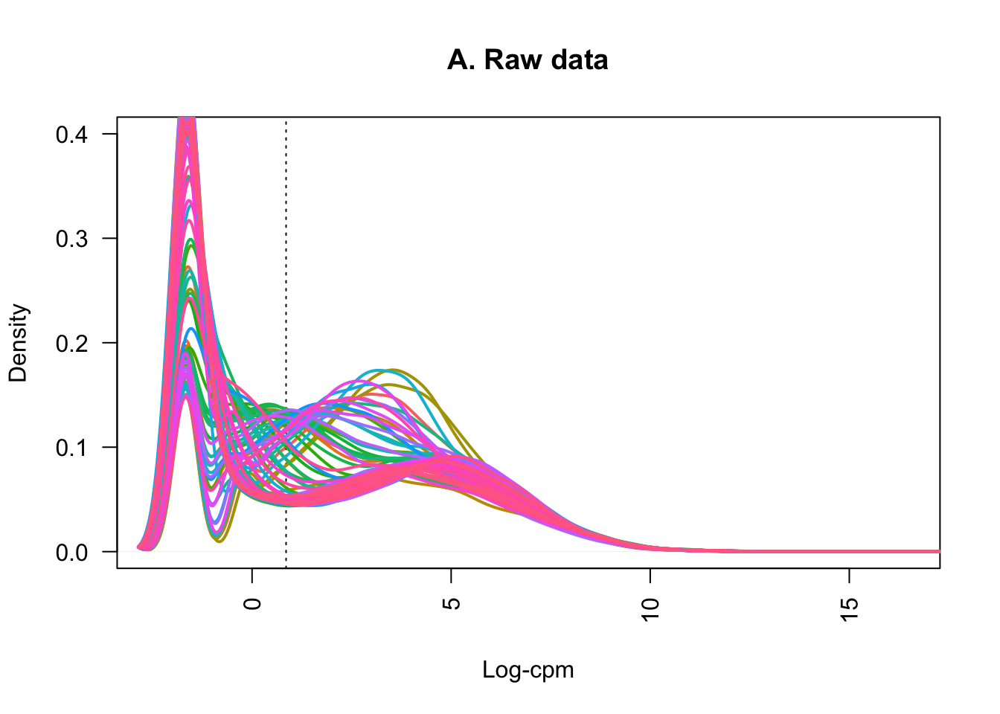
lcpm2 <- cpm(counts_FOX, log=TRUE)
plot(density(lcpm2[,1]), col=col[1], lwd=2, ylim=c(0,0.4), las=2, main="", xlab="")
title(main="B. Filtered data", xlab="Log-cpm")
abline(v=lcpm.cutoff, lty=3)
for (i in 2:nsamples){
den <- density(lcpm2[,i])
lines(den$x, den$y, col=col[i], lwd=2)
}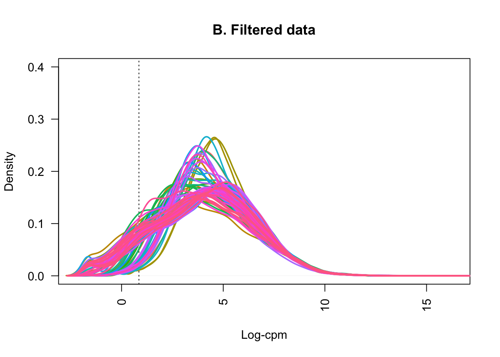
We suspected that effective library size might have been contributing to the lack of uniformity between samples in the density plots. Colouring the samples by effective library size showed that the distribution of counts was similar for samples with larger libraries (8-12 million reads) where two peaks were seen after filtering, one at logCPM ~-1.5 and one at 5 (B). Samples with smaller libraries tended to have a single peak between 0 and 3 log-CPM (B).
#create binds for effective samples size
lib.size <- counts_FOX$samples$lib.size
#set up cut-off values
breaks <- c(0,2000000,4000000,6000000,8000000,10000000,12000000)
#specify bin labels
tags <- c("[0-2m)", "[2-4m)", "[4-6m)", "[6-8m)", "[8-10m)", "[10-12m)")
#bucket library sizes into bins
group_tags <- cut(lib.size,
breaks=breaks,
include.lowest=TRUE,
right=FALSE,
labels=tags)
#add new tags to count matrix
counts_FOX$samples$lib_size <- as.factor(group_tags)
#make density plots for counts before and after filtering out genes with low expression
par(mfrow = c(1,1))
lcpmz <- lcpm
lcpm.cutoff <- log2(10/M + 2/L)
nsamples <- ncol(counts)
col.lib <- counts_FOX$samples$lib_size
levels(col.lib) <- brewer.pal(nlevels(col.lib), "Set1")
plot(density(lcpmz[,1]), col = as.character(col.lib[1]), lwd = 1, ylim = c(0, 0.4), las = 2,
main = "", xlab = "")
title(main = "A. Raw data", xlab = "Log-cpm")
abline(v = lcpm.cutoff, lty = 3)
for (i in 2:nsamples){
den <- density(lcpmz[,i])
lines(den$x, den$y, col = as.character(col.lib[i]), lwd = 1)
}
legend("topright",legend=levels(counts_FOX$samples$lib_size), col=levels(col.lib), pch=16, title ="Library size (millions)")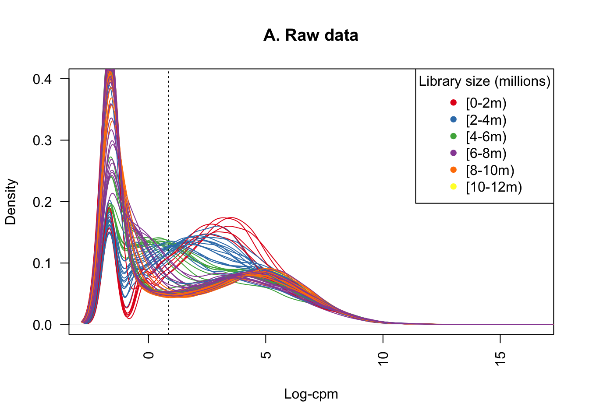
lcpmy <- cpm(counts_FOX, log=TRUE)
plot(density(lcpmy[,1]), col = as.character(col.lib[1]), lwd = 1, ylim = c(0, 0.4), las = 2,
main = "", xlab = "")
title(main = "B. Filtered data", xlab = "Log-cpm")
abline(v = lcpm.cutoff, lty = 3)
for (i in 2:nsamples){
den <- density(lcpmy[,i])
lines(den$x, den$y, col = as.character(col.lib[i]), lwd = 1)
}
legend("topright",legend=levels(counts_FOX$samples$lib_size), col=levels(col.lib), pch=16, title ="Library size (millions)" )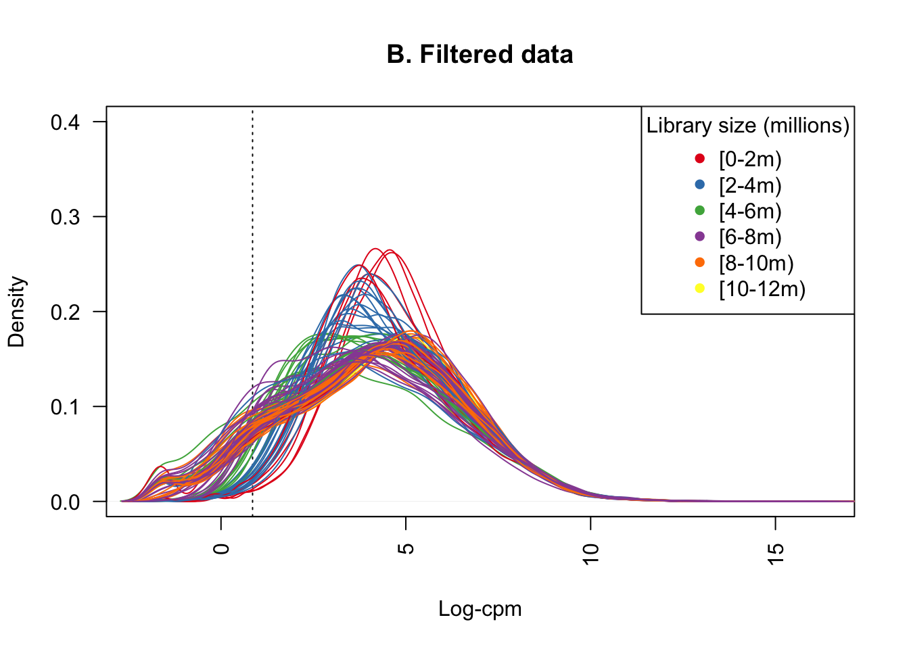
TMM normalisation was applied to account for any highly expressed genes monopolising the sequencing and to account for the underlying differences in the distributions of expressed transcripts between samples.
#apply TMM normalisation
norm_FOX <- calcNormFactors(counts_FOX, method = "TMM")Although ~30 million reads per sample were obtained from the sequencing, effective library sizes varied from around 2 million reads to more than 10 million reads, with the median just under 7 million reads (A). This suggests we are only likely to capture the most abundant maternal RNAs. The range and distribution of expression values look fairly uniform between samples, which is what we expect, and TMM normalisation further improves this.
dat <- data.frame(lib = norm_FOX$samples$lib.size,
status = norm_FOX$samples$group,
sample = colnames(norm_FOX))
p1 <- ggplot(dat, aes(x = sample, y = lib, fill = status)) +
geom_bar(stat = "identity") +
theme(axis.text.x = element_text(angle = 45, hjust = 1)) +
labs(x = "Sample", y = "Library size",
fill = "Preeclampsia status", title = "A. Library size after filtering") +
geom_hline(yintercept = median(dat$lib), linetype = "dashed") +
scale_x_discrete(limits = dat$sample)
dat <- reshape2::melt(cpm(norm_FOX, normalized.lib.sizes = FALSE, log = TRUE),
value.name = "cpm")
dat$status <- rep(norm_FOX$samples$group, each = nrow(norm_FOX))
colnames(dat)[2] <- "sample"
p2 <- ggplot(dat, aes(x = sample, y = cpm, fill = status)) +
geom_boxplot(show.legend = FALSE, outlier.size = 0.75) +
theme(axis.text.x = element_text(angle = 45, hjust = 1, size = 7)) +
labs(x = "Sample", y = "Log-CPM",
fill = "Preeclampsia status", title = "B. Expression values after filtering") +
geom_hline(yintercept = median(dat$lib), linetype = "dashed")
dat <- reshape2::melt(cpm(norm_FOX, normalized.lib.sizes = TRUE, log = TRUE),
value.name = "cpm")
dat$status <- rep(norm_FOX$samples$group, each = nrow(norm_FOX))
colnames(dat)[2] <- "sample"
p3 <- ggplot(dat, aes(x = sample, y = cpm, fill = status)) +
geom_boxplot(show.legend = FALSE, outlier.size = 0.75) +
theme(axis.text.x = element_text(angle = 45, hjust = 1, size = 7)) +
labs(x = "Sample", y = "Log-CPM",
fill = "Preeclampsia status", title = "C. Expression values after normalisation") +
geom_hline(yintercept = median(dat$lib), linetype = "dashed")
p1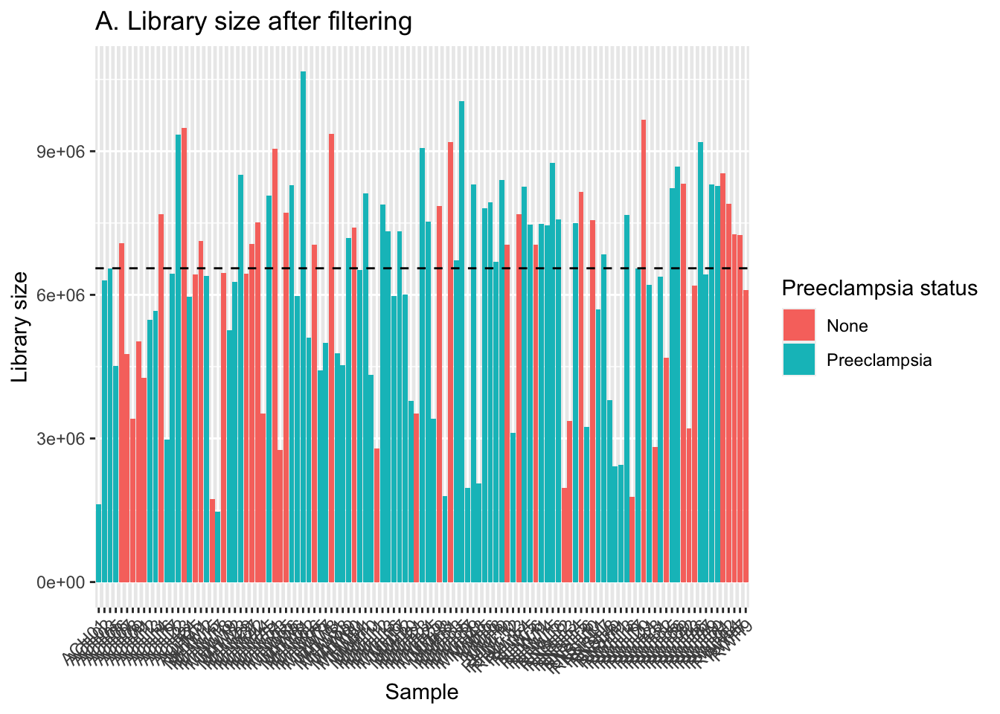
p2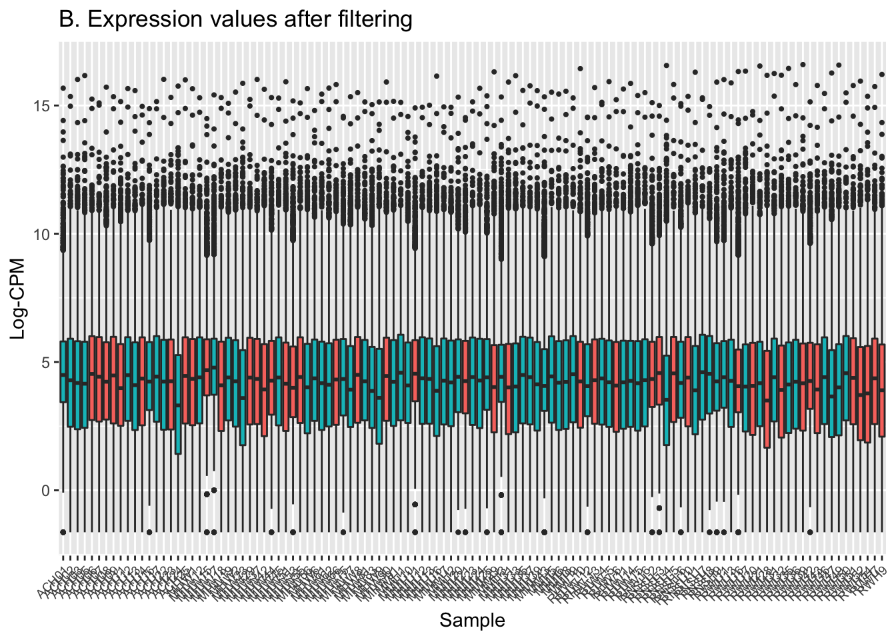
p3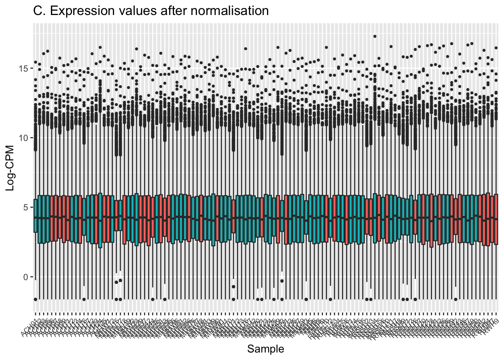
Multi-dimensional scaling (MDS) plots show the largest sources of variation in the data. They are a good way of identifying structure in the data and exploring relationships between samples. The following plots examine the first four principle components coloured for known features of the data including preeclampsia status, fetal sex, collection site, diabates status, steroids and library size. The samples do not cluster by known features of the data, except library size. The lack of clustering by preeclampsia status in any of the first four principle components suggests we might not find any differentially expressed genes. The MDS plots suggest that the largest source of variation in the data is library size, as there is a strong trend towards increasingly smaller library sizes from left to right across the first dimension.
dims <- list(c(1,2), c(1,3), c(2,3), c(3,4))
vars <- c("group", "sex", "site", "diabetes", "steroids", "lib_size")
patches <- vector("list", length(vars))
for(i in 1:length(vars)){
p <- vector("list", length(dims))
for(j in 1:length(dims)){
mds <- plotMDS(cpm(norm_FOX, log = TRUE), top = 1000, gene.selection="common",
plot = FALSE, dim.plot = dims[[j]])
dat <- tibble::tibble(x = mds$x, y = mds$y,
sample = samplenames,
variable = pull(norm_FOX$samples, vars[i]))
p[[j]] <- ggplot(dat, aes(x = x, y = y, colour = variable)) +
geom_text(aes(label = sample), size = 2.5) +
labs(x = glue::glue("Principal component {dims[[j]][1]}"),
y = glue::glue("Principal component {dims[[j]][2]}"),
colour = vars[i])
}
patches[[i]] <- wrap_elements(wrap_plots(p, ncol = 2, guides = "collect") +
plot_annotation(title = glue::glue("Coloured by: {vars[i]}")) &
theme(legend.position = "bottom"))
}
patches[[1]]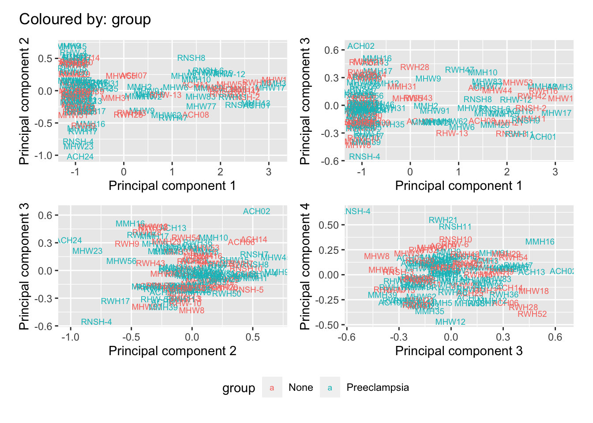
[[2]]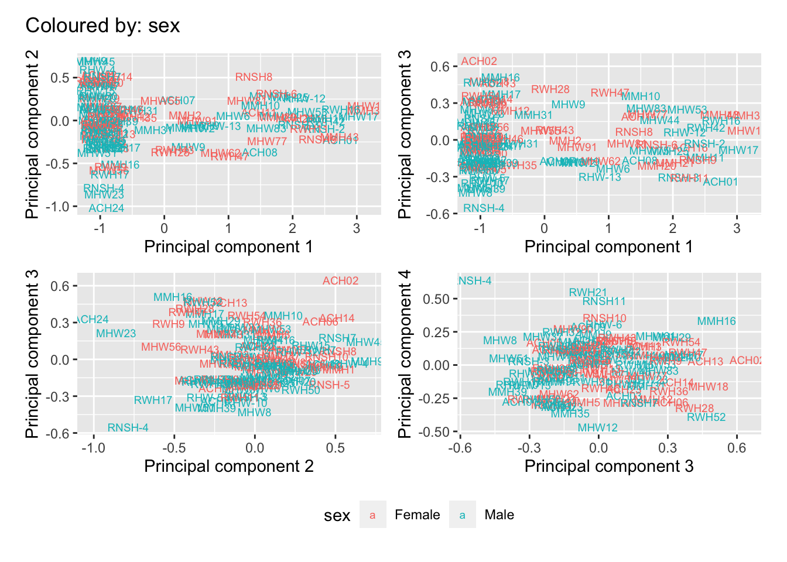
[[3]]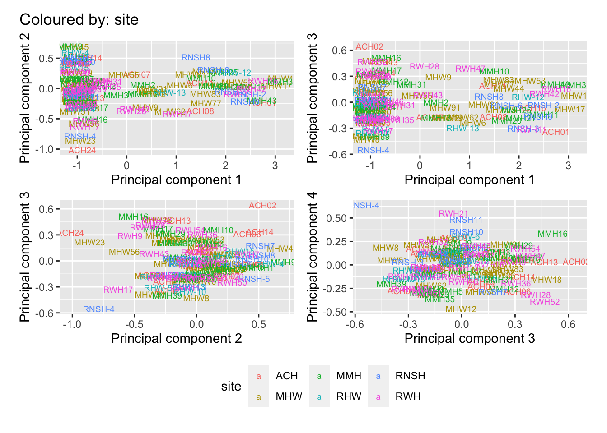
[[4]]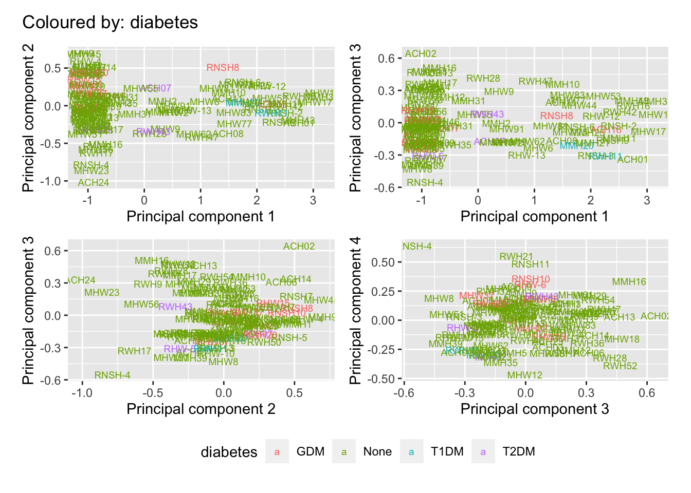
[[5]]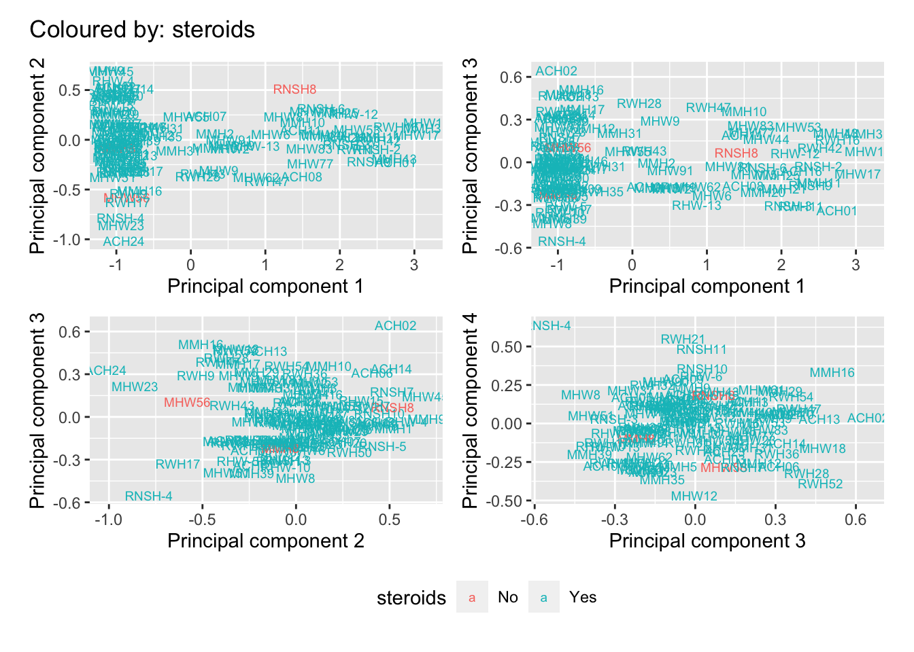
[[6]]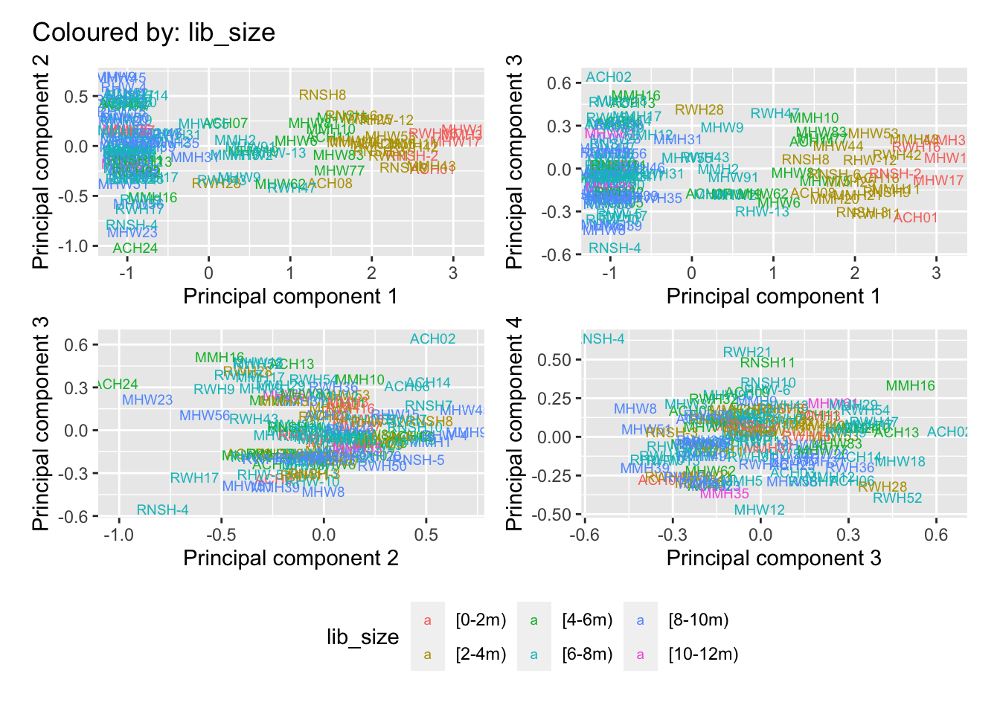
Given that the samples largely overlapped on the MDS plots, and there is a lot of variability that is not clearly associated with any of the known features (except library size), we will use RUVSeq to remove some of the unwanted variation from the data. As per the RUVSeq vignette we will use a set of housekeeping genes, in this case we will estimate unwanted variation using the expression of housekeeping genes defined using the Human BodyMap 2.0 data in our dataset.
The heatmap below shows the expression of these housekeeping genes in our samples. In general expression looks reasonably similar, but there are some differences between samples.
hkGenes <- read.delim(here("data/HK_genes.txt"), stringsAsFactors = FALSE,
header = FALSE, col.names = c("SYMBOL","REFSEQ"),
strip.white = TRUE)
aheatmap(cpm(norm_FOX[norm_FOX$genes$SYMBOL %in% hkGenes$SYMBOL,], log = TRUE),
main = "log2 CPM Expression of Housekeeping Genes", labRow = NA,
annCol = list(Preeclampsia = norm_FOX$samples$group,
Diabetes = norm_FOX$samples$diabetes,
Site = norm_FOX$samples$site,
Sex = norm_FOX$samples$sex,
Lib_size = norm_FOX$samples$lib_size),
annColors = list(scales::hue_pal()(length(unique(norm_FOX$samples$group))),
scales::hue_pal()(length(unique(norm_FOX$samples$diabetes))),
scales::hue_pal()(length(unique(norm_FOX$samples$site))),
scales::brewer_pal(palette = "Set1")(length(unique(norm_FOX$samples$sex))),
scales::brewer_pal(palette = "Dark2")(length(unique(norm_FOX$samples$lib_size)))),
scale = "none",
fontsize = 7)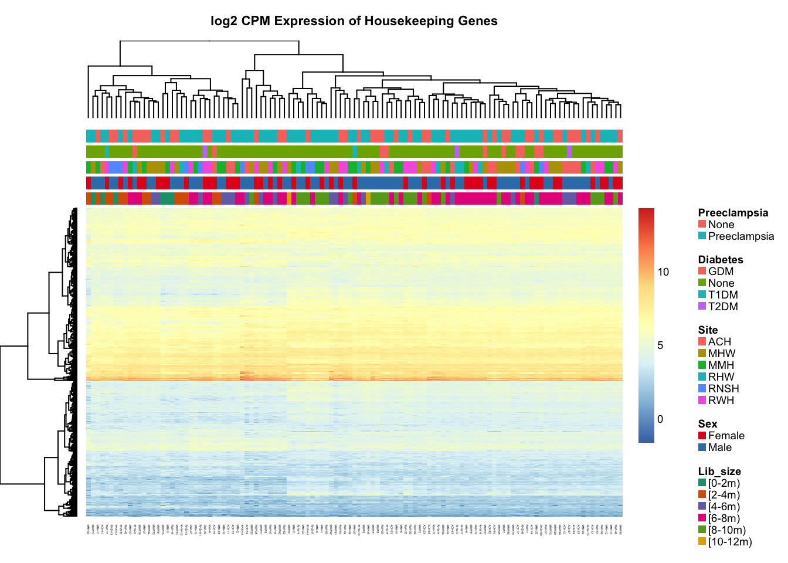
The scree plot shows that most of the variation within the negative control housekeeping genes is captured in the first principle component.
PCs <- prcomp(t(norm_FOX$counts[which(norm_FOX$genes$SYMBOL %in% hkGenes$SYMBOL),]),
center = TRUE, scale = TRUE, retx=TRUE)
loadings = PCs$x # pc loadings
plot(PCs, type="lines") # scree plot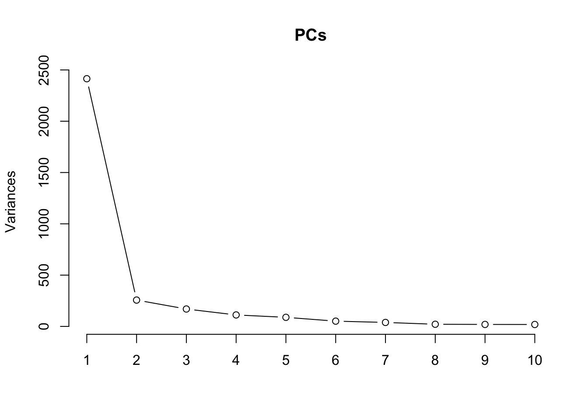
Using the RUVg function, we will estimate the unwanted variation in our data using the HKG for k = 1, 2 and 3.
yRg1 <- RUVg(norm_FOX$counts, which(norm_FOX$genes$SYMBOL %in% hkGenes$SYMBOL), k=1)
yRg2 <- RUVg(norm_FOX$counts, which(norm_FOX$genes$SYMBOL %in% hkGenes$SYMBOL), k=2)
yRg3 <- RUVg(norm_FOX$counts, which(norm_FOX$genes$SYMBOL %in% hkGenes$SYMBOL), k=3)The RLE plots below show that RUVg adjustment is a significant improvement over the raw data with k=1. The improvements with k=2 and k=3 are relatively minor in comparison.
plotRLE(norm_FOX$counts, ylim=c(-0.5,0.5), las=2, main="Raw",
cex.axis = 0.6)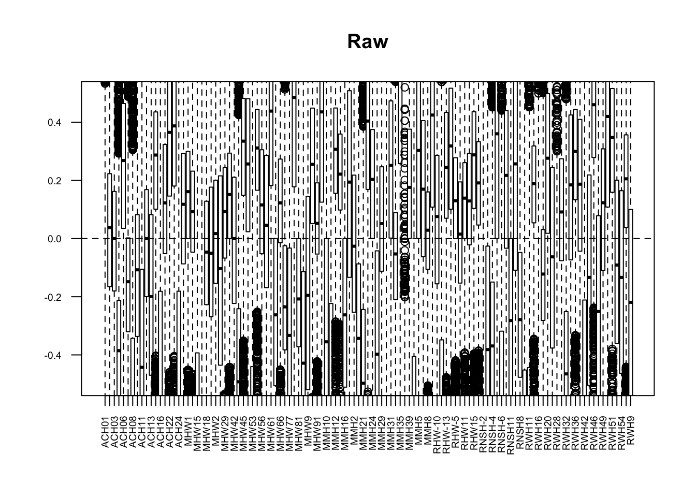
plotRLE(yRg1$normalizedCounts, ylim=c(-0.5,0.5), las=2, main="RUVg k=1",
cex.axis = 0.6)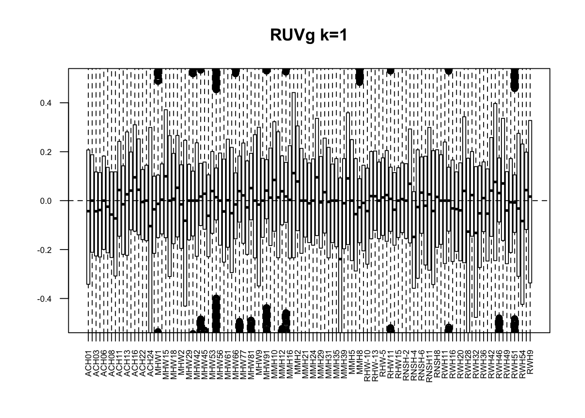
plotRLE(yRg2$normalizedCounts, ylim=c(-0.5,0.5), las=2, main="RUVg k=2",
cex.axis = 0.6)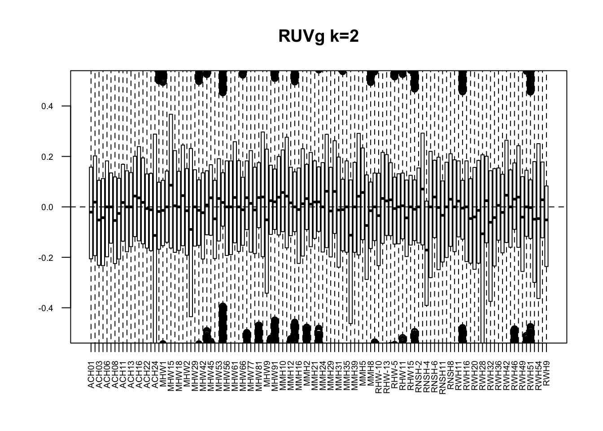
plotRLE(yRg3$normalizedCounts, ylim=c(-0.5,0.5), las=2, main="RUVg k=3",
cex.axis = 0.6)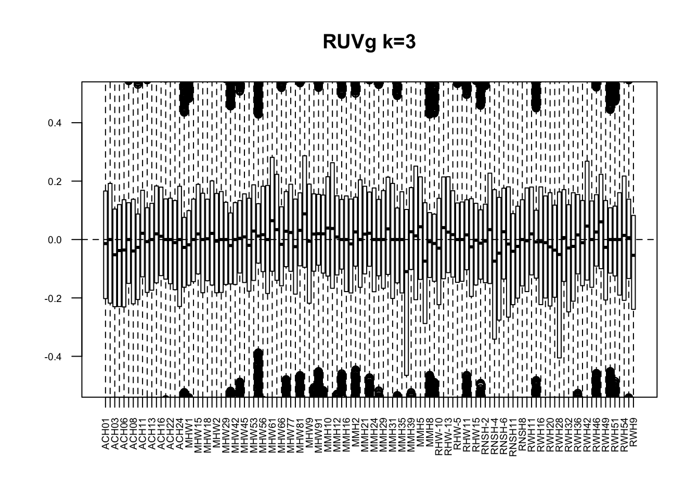
The MDS plots of the RUVg normalised counts below show that the samples now have less variability in the first principal component, but there is still no separation between samples with and without preeclampsia, suggesting that we may not find any differentially expressed genes.
mds <- plotMDS(cpm(norm_FOX$counts, log = TRUE), top = 1000, gene.selection="common",
plot = FALSE)
dat <- tibble::tibble(x = mds$x, y = mds$y,
sample = norm_FOX$samples$sample,
status = norm_FOX$samples$group)
p <- ggplot(dat, aes(x = x, y = y, colour = status)) +
geom_text(aes(label = sample), size = 2.5) +
labs(x = "Principal component 1",
y = "Principal component 2",
colour = "Preeclampsia status") +
ggtitle("Raw")
mds <- plotMDS(cpm(yRg1$normalizedCounts, log = TRUE), top = 1000,
gene.selection="common", plot = FALSE)
dat1 <- tibble::tibble(x = mds$x, y = mds$y,
sample = norm_FOX$samples$sample,
status = norm_FOX$samples$group)
p1 <- ggplot(dat1, aes(x = x, y = y, colour = status)) +
geom_text(aes(label = sample), size = 2.5) +
labs(x = "Principal component 1",
y = "Principal component 2",
colour = "Preeclampsia status") +
ggtitle("RUVg k=1")
mds <- plotMDS(cpm(yRg2$normalizedCounts, log = TRUE), top = 1000,
gene.selection="common", plot = FALSE)
dat2 <- tibble::tibble(x = mds$x, y = mds$y,
sample = norm_FOX$samples$sample,
status = norm_FOX$samples$group)
p2 <- ggplot(dat2, aes(x = x, y = y, colour = status)) +
geom_text(aes(label = sample), size = 2.5) +
labs(x = "Principal component 1",
y = "Principal component 2",
colour = "Preeclampsia status") +
ggtitle("RUVg k=2")
mds <- plotMDS(cpm(yRg3$normalizedCounts, log = TRUE), top = 1000,
gene.selection="common", plot = FALSE)
dat3 <- tibble::tibble(x = mds$x, y = mds$y,
sample = norm_FOX$samples$sample,
status = norm_FOX$samples$group)
p3 <- ggplot(dat3, aes(x = x, y = y, colour = status)) +
geom_text(aes(label = sample), size = 2.5) +
labs(x = "Principal component 1",
y = "Principal component 2",
colour = "Preeclampsia status") +
ggtitle("RUVg k=3")
((p | p1) / (p2 | p3)) +
plot_layout(guides = "collect") &
theme(legend.position = "bottom")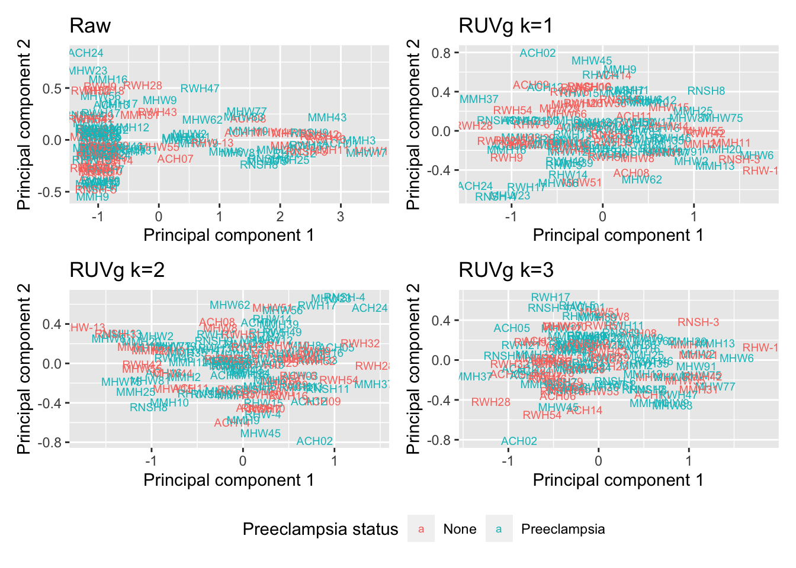
From the MDS plots below we can see that when samples are coloured for library size, RUVg with k=1 removes the effect of library size in the first principal component.
mds <- plotMDS(cpm(norm_FOX$counts, log = TRUE), top = 1000, gene.selection="common",
plot = FALSE)
dat <- tibble::tibble(x = mds$x, y = mds$y,
sample = norm_FOX$samples$sample,
status = norm_FOX$samples$lib_size)
p <- ggplot(dat, aes(x = x, y = y, colour = status)) +
geom_text(aes(label = sample), size = 2.5) +
labs(x = "Principal component 1",
y = "Principal component 2",
colour = "Effective library size") +
ggtitle("Raw")
mds <- plotMDS(cpm(yRg1$normalizedCounts, log = TRUE), top = 1000,
gene.selection="common", plot = FALSE)
dat1 <- tibble::tibble(x = mds$x, y = mds$y,
sample = norm_FOX$samples$sample,
status = norm_FOX$samples$lib_size)
p1 <- ggplot(dat1, aes(x = x, y = y, colour = status)) +
geom_text(aes(label = sample), size = 2.5) +
labs(x = "Principal component 1",
y = "Principal component 2",
colour = "Effective library size") +
ggtitle("RUVg k=1")
mds <- plotMDS(cpm(yRg2$normalizedCounts, log = TRUE), top = 1000,
gene.selection="common", plot = FALSE)
dat2 <- tibble::tibble(x = mds$x, y = mds$y,
sample = norm_FOX$samples$sample,
status = norm_FOX$samples$group)
(p + p1) +
plot_layout(guides = "collect") &
theme(legend.position = "bottom")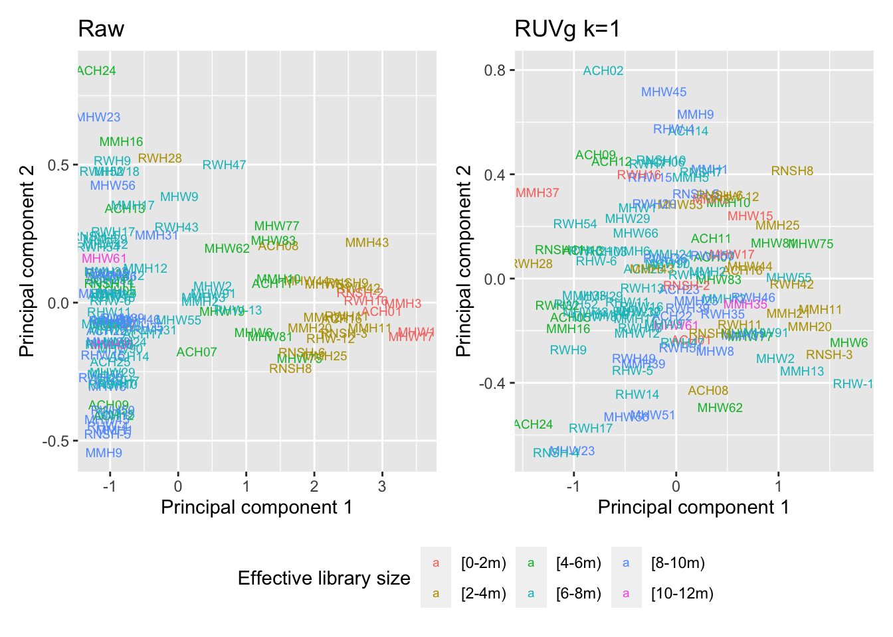
Now we will look for differential expression using the edgeR negative binomial approach outlined in the RUVSeq vignette. This uses a design matrix that includes the covariate of interest (preeclampsia status) and the factors of unwanted variation calculated by RUVg. The samples from preeclamptic pregnancies were compared to those without preeclampsia. A summary of the number of differentially expressed genes (table 2) and their details (table 3) are shown below.
norm <- yRg1
#set up design matrix
design <- model.matrix(~norm_FOX$samples$group + norm$W)
colnames(design)[2] <- "Preeclampsia"
y <- estimateGLMCommonDisp(norm_FOX, design)
y <- estimateGLMTagwiseDisp(y, design)
fit <- glmFit(y, design)
lrt <- glmLRT(fit, coef = 2)
fitSum <- summary(decideTests(lrt, p.value = 0.05))
kable_styling(kable((fitSum), caption="Tbale 2: Number of differentially expressed genes"))| Preeclampsia | |
|---|---|
| Down | 0 |
| NotSig | 13485 |
| Up | 1 |
top <- topTags(lrt, n = 1)$table
kable_styling(kable((top[,c(1,3,5,6,9)]), caption = "Table 3: DE genes in preeclampsia compared to no hypertension"))| ENSEMBL | SYMBOL | logFC | logCPM | FDR | |
|---|---|---|---|---|---|
| ENSG00000179833 | ENSG00000179833 | SERTAD2 | 0.3683104 | 5.57876 | 0.0249942 |
Volcano plot below shows the statistical significance versus the logFC of genes in the differential expression analysis, with only one gene, SERTAD2 with FDR < 0.05.
topTags(lrt, n = Inf)$table %>%
mutate(sig = ifelse(FDR <= 0.05, "<= 0.05", "> 0.05")) -> dat
ggplot(dat, aes(x = logFC, y = -log10(PValue), color = sig)) +
geom_point(alpha = 0.75) +
ggrepel::geom_text_repel(data = subset(dat, FDR < 0.05),
aes(x = logFC, y = -log10(PValue),
label = SYMBOL),
size = 2, colour = "black", max.overlaps = 15) +
labs(x = expression(~log[2]~"(Fold Change)"),
y = expression(~-log[10]~"(P-value)"),
colour = "FDR") +
scale_colour_brewer(palette = "Set1")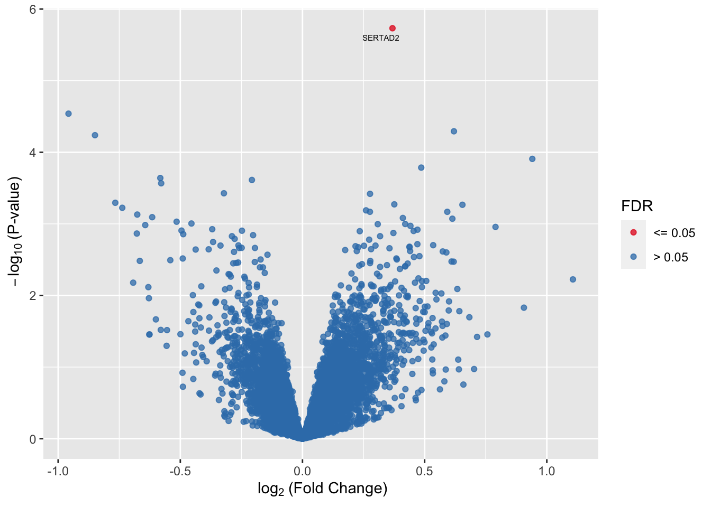
The following plot shows the expression of the differentially expressed gene for samples collected from women with preeclampsia versus those without. Despite the variability in the data and the lack of separation in the MDS plots, we were still able to detect one differentially expressed gene, although the expression values largely overlap.
dat <- reshape2::melt(cpm(norm$normalizedCounts, log = TRUE),
value.name = "cpm")
dat$group <- rep(y$samples$group, each = nrow(y))
dat$gene <- rep(y$genes$SYMBOL, ncol(y))
ggplot(data = subset(dat, dat$gene == top$SYMBOL),
aes(x = group, y = cpm, colour = group)) +
geom_jitter(width = 0.25) +
stat_summary(fun = "mean", geom = "crossbar") +
labs(x = "Status", y = "log2 Norm. CPM", colour = "Status") +
ggtitle(top$SYMBOL) +
theme(plot.title = element_text(size = 8),
plot.subtitle = element_text(size = 7),
axis.title = element_text(size = 8),
axis.text.x = element_text(size = 7))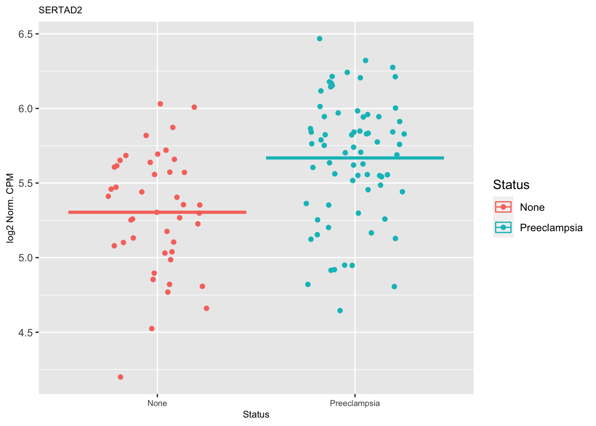
The results of this study were likely influenced by the small and quite variable effective library size, with only relatively highly expressed genes included in the analysis. RUVSeq normalisation was used to account for this and any other unknown variability in the data. We found only one differentially expressed gene in preeclampsia samples compared to samples without preeclampsia, which was SERTAD2.
sessionInfo()R version 3.6.1 (2019-07-05)
Platform: x86_64-apple-darwin15.6.0 (64-bit)
Running under: macOS 10.16
Matrix products: default
BLAS: /Library/Frameworks/R.framework/Versions/3.6/Resources/lib/libRblas.0.dylib
LAPACK: /Library/Frameworks/R.framework/Versions/3.6/Resources/lib/libRlapack.dylib
locale:
[1] en_AU.UTF-8/en_AU.UTF-8/en_AU.UTF-8/C/en_AU.UTF-8/en_AU.UTF-8
attached base packages:
[1] stats4 parallel stats graphics grDevices utils datasets
[8] methods base
other attached packages:
[1] ggrepel_0.9.1
[2] RUVSeq_1.20.0
[3] here_1.0.1
[4] NMF_0.23.0
[5] cluster_2.1.0
[6] rngtools_1.5
[7] pkgmaker_0.32.2
[8] registry_0.5-1
[9] patchwork_1.1.2
[10] Homo.sapiens_1.3.1
[11] TxDb.Hsapiens.UCSC.hg19.knownGene_3.2.2
[12] org.Hs.eg.db_3.10.0
[13] GO.db_3.10.0
[14] OrganismDbi_1.28.0
[15] GenomicFeatures_1.38.2
[16] AnnotationDbi_1.48.0
[17] kableExtra_1.3.4
[18] knitr_1.30
[19] tableone_0.13.0
[20] RColorBrewer_1.1-2
[21] EDASeq_2.20.0
[22] ShortRead_1.44.3
[23] GenomicAlignments_1.22.1
[24] SummarizedExperiment_1.16.1
[25] DelayedArray_0.12.3
[26] matrixStats_0.57.0
[27] Rsamtools_2.2.3
[28] GenomicRanges_1.38.0
[29] GenomeInfoDb_1.22.1
[30] Biostrings_2.54.0
[31] XVector_0.26.0
[32] IRanges_2.20.2
[33] S4Vectors_0.24.4
[34] BiocParallel_1.20.1
[35] Biobase_2.46.0
[36] BiocGenerics_0.32.0
[37] forcats_0.5.0
[38] stringr_1.4.0
[39] dplyr_1.0.2
[40] purrr_0.3.4
[41] readr_1.4.0
[42] tidyr_1.1.2
[43] tibble_3.0.3
[44] ggplot2_3.3.2
[45] tidyverse_1.3.0
[46] edgeR_3.28.1
[47] Glimma_1.14.0
[48] limma_3.42.2
[49] workflowr_1.7.0
loaded via a namespace (and not attached):
[1] R.utils_2.10.1 tidyselect_1.1.0 RSQLite_2.2.1
[4] grid_3.6.1 DESeq_1.38.0 munsell_0.5.0
[7] codetools_0.2-16 withr_2.3.0 colorspace_1.4-1
[10] highr_0.8 rstudioapi_0.11 labeling_0.3
[13] git2r_0.27.1 GenomeInfoDbData_1.2.2 hwriter_1.3.2
[16] farver_2.0.3 bit64_4.0.5 rprojroot_2.0.3
[19] vctrs_0.3.4 generics_0.0.2 xfun_0.18
[22] BiocFileCache_1.10.2 R6_2.4.1 doParallel_1.0.17
[25] locfit_1.5-9.4 bitops_1.0-6 assertthat_0.2.1
[28] promises_1.1.1 scales_1.1.1 gtable_0.3.0
[31] processx_3.7.0 rlang_0.4.7 genefilter_1.68.0
[34] systemfonts_1.0.4 splines_3.6.1 rtracklayer_1.46.0
[37] broom_0.7.1 BiocManager_1.30.10 yaml_2.2.1
[40] reshape2_1.4.4 modelr_0.1.8 backports_1.1.10
[43] httpuv_1.5.4 RBGL_1.62.1 tools_3.6.1
[46] gridBase_0.4-7 ellipsis_0.3.1 Rcpp_1.0.5
[49] plyr_1.8.6 progress_1.2.2 zlibbioc_1.32.0
[52] RCurl_1.98-1.2 ps_1.3.4 prettyunits_1.1.1
[55] openssl_1.4.3 zoo_1.8-8 haven_2.3.1
[58] fs_1.5.0 survey_4.1-1 magrittr_1.5
[61] reprex_0.3.0 whisker_0.4 aroma.light_3.16.0
[64] hms_0.5.3 evaluate_0.14 xtable_1.8-4
[67] XML_3.99-0.3 jpeg_0.1-8.1 readxl_1.3.1
[70] compiler_3.6.1 biomaRt_2.42.1 crayon_1.3.4
[73] R.oo_1.24.0 htmltools_0.5.0 later_1.1.0.1
[76] geneplotter_1.64.0 lubridate_1.7.9 DBI_1.1.0
[79] dbplyr_1.4.4 MASS_7.3-53 rappdirs_0.3.1
[82] Matrix_1.2-18 cli_2.0.2 mitools_2.4
[85] R.methodsS3_1.8.1 pkgconfig_2.0.3 getPass_0.2-2
[88] xml2_1.3.2 foreach_1.5.0 svglite_2.1.0
[91] annotate_1.64.0 webshot_0.5.2 rvest_0.3.6
[94] callr_3.7.2 digest_0.6.25 graph_1.64.0
[97] rmarkdown_2.4 cellranger_1.1.0 curl_4.3
[100] lifecycle_0.2.0 jsonlite_1.7.1 viridisLite_0.3.0
[103] askpass_1.1 fansi_0.4.1 labelled_2.7.0
[106] pillar_1.4.6 lattice_0.20-41 httr_1.4.2
[109] survival_3.2-7 glue_1.4.2 png_0.1-7
[112] iterators_1.0.12 bit_4.0.4 class_7.3-17
[115] stringi_1.5.3 blob_1.2.1 latticeExtra_0.6-29
[118] memoise_1.1.0 e1071_1.7-3
sessionInfo()R version 3.6.1 (2019-07-05)
Platform: x86_64-apple-darwin15.6.0 (64-bit)
Running under: macOS 10.16
Matrix products: default
BLAS: /Library/Frameworks/R.framework/Versions/3.6/Resources/lib/libRblas.0.dylib
LAPACK: /Library/Frameworks/R.framework/Versions/3.6/Resources/lib/libRlapack.dylib
locale:
[1] en_AU.UTF-8/en_AU.UTF-8/en_AU.UTF-8/C/en_AU.UTF-8/en_AU.UTF-8
attached base packages:
[1] stats4 parallel stats graphics grDevices utils datasets
[8] methods base
other attached packages:
[1] ggrepel_0.9.1
[2] RUVSeq_1.20.0
[3] here_1.0.1
[4] NMF_0.23.0
[5] cluster_2.1.0
[6] rngtools_1.5
[7] pkgmaker_0.32.2
[8] registry_0.5-1
[9] patchwork_1.1.2
[10] Homo.sapiens_1.3.1
[11] TxDb.Hsapiens.UCSC.hg19.knownGene_3.2.2
[12] org.Hs.eg.db_3.10.0
[13] GO.db_3.10.0
[14] OrganismDbi_1.28.0
[15] GenomicFeatures_1.38.2
[16] AnnotationDbi_1.48.0
[17] kableExtra_1.3.4
[18] knitr_1.30
[19] tableone_0.13.0
[20] RColorBrewer_1.1-2
[21] EDASeq_2.20.0
[22] ShortRead_1.44.3
[23] GenomicAlignments_1.22.1
[24] SummarizedExperiment_1.16.1
[25] DelayedArray_0.12.3
[26] matrixStats_0.57.0
[27] Rsamtools_2.2.3
[28] GenomicRanges_1.38.0
[29] GenomeInfoDb_1.22.1
[30] Biostrings_2.54.0
[31] XVector_0.26.0
[32] IRanges_2.20.2
[33] S4Vectors_0.24.4
[34] BiocParallel_1.20.1
[35] Biobase_2.46.0
[36] BiocGenerics_0.32.0
[37] forcats_0.5.0
[38] stringr_1.4.0
[39] dplyr_1.0.2
[40] purrr_0.3.4
[41] readr_1.4.0
[42] tidyr_1.1.2
[43] tibble_3.0.3
[44] ggplot2_3.3.2
[45] tidyverse_1.3.0
[46] edgeR_3.28.1
[47] Glimma_1.14.0
[48] limma_3.42.2
[49] workflowr_1.7.0
loaded via a namespace (and not attached):
[1] R.utils_2.10.1 tidyselect_1.1.0 RSQLite_2.2.1
[4] grid_3.6.1 DESeq_1.38.0 munsell_0.5.0
[7] codetools_0.2-16 withr_2.3.0 colorspace_1.4-1
[10] highr_0.8 rstudioapi_0.11 labeling_0.3
[13] git2r_0.27.1 GenomeInfoDbData_1.2.2 hwriter_1.3.2
[16] farver_2.0.3 bit64_4.0.5 rprojroot_2.0.3
[19] vctrs_0.3.4 generics_0.0.2 xfun_0.18
[22] BiocFileCache_1.10.2 R6_2.4.1 doParallel_1.0.17
[25] locfit_1.5-9.4 bitops_1.0-6 assertthat_0.2.1
[28] promises_1.1.1 scales_1.1.1 gtable_0.3.0
[31] processx_3.7.0 rlang_0.4.7 genefilter_1.68.0
[34] systemfonts_1.0.4 splines_3.6.1 rtracklayer_1.46.0
[37] broom_0.7.1 BiocManager_1.30.10 yaml_2.2.1
[40] reshape2_1.4.4 modelr_0.1.8 backports_1.1.10
[43] httpuv_1.5.4 RBGL_1.62.1 tools_3.6.1
[46] gridBase_0.4-7 ellipsis_0.3.1 Rcpp_1.0.5
[49] plyr_1.8.6 progress_1.2.2 zlibbioc_1.32.0
[52] RCurl_1.98-1.2 ps_1.3.4 prettyunits_1.1.1
[55] openssl_1.4.3 zoo_1.8-8 haven_2.3.1
[58] fs_1.5.0 survey_4.1-1 magrittr_1.5
[61] reprex_0.3.0 whisker_0.4 aroma.light_3.16.0
[64] hms_0.5.3 evaluate_0.14 xtable_1.8-4
[67] XML_3.99-0.3 jpeg_0.1-8.1 readxl_1.3.1
[70] compiler_3.6.1 biomaRt_2.42.1 crayon_1.3.4
[73] R.oo_1.24.0 htmltools_0.5.0 later_1.1.0.1
[76] geneplotter_1.64.0 lubridate_1.7.9 DBI_1.1.0
[79] dbplyr_1.4.4 MASS_7.3-53 rappdirs_0.3.1
[82] Matrix_1.2-18 cli_2.0.2 mitools_2.4
[85] R.methodsS3_1.8.1 pkgconfig_2.0.3 getPass_0.2-2
[88] xml2_1.3.2 foreach_1.5.0 svglite_2.1.0
[91] annotate_1.64.0 webshot_0.5.2 rvest_0.3.6
[94] callr_3.7.2 digest_0.6.25 graph_1.64.0
[97] rmarkdown_2.4 cellranger_1.1.0 curl_4.3
[100] lifecycle_0.2.0 jsonlite_1.7.1 viridisLite_0.3.0
[103] askpass_1.1 fansi_0.4.1 labelled_2.7.0
[106] pillar_1.4.6 lattice_0.20-41 httr_1.4.2
[109] survival_3.2-7 glue_1.4.2 png_0.1-7
[112] iterators_1.0.12 bit_4.0.4 class_7.3-17
[115] stringi_1.5.3 blob_1.2.1 latticeExtra_0.6-29
[118] memoise_1.1.0 e1071_1.7-3